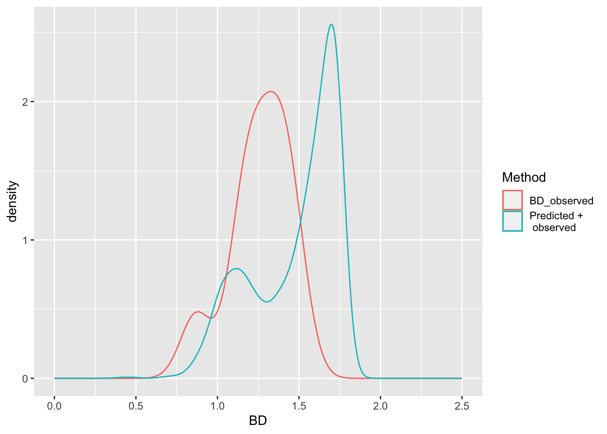

Technical Manual for Global Soil Nutrient and Nutrient Budgets map (GSNmap)
Technical Manual for Global Soil Nutrient and Nutrient Budgets map (GSNmap)Chapter 6 Step 1: soil data preparation
This chapter builds on the previous one as it requires basic understanding of the data handling using R. From this point onwards, the steps base on each other and are needed to complete the mapping process. The instructions covered in this chapter provides step-by-step instructions on the following items:
- Perform a quality check of the data
- Estimate bulk density using PTF
- Harmonize soil layers (using splines)
- Plot and save the formatted soil data
6.1 Load national data
As specified in the previous Chapter in regards to pre-processing, the first steps again are used to set the working directory and load the necessary R packages. Note that there are many ways to install packages besides the most common way using the function install.packages(). For instance, to install the terra package, one has to write install.packages("terra"). This installs the package from CRAN. However, there are a few exceptions where development versions of R packages are required. In these instances additional packages such as devtools or remotes are needed (see example in code below). These packages are then able to install packages from for instance GitHub repositories.
# 0 - User-defined variables ===================================================
wd <- 'C:/Users/hp/Documents/GitHub/Digital-Soil-Mapping'
#wd <- "C:/GIT/Digital-Soil-Mapping"
# 1 - Set working directory and load necessary packages ========================
setwd(wd) # change the path accordingly
library(tidyverse) # for data management and reshaping
library(readxl) # for importing excel files
library(mapview) # for seeing the profiles in a map
library(sf) # to manage spatial data (shp vectors)
# install.packages("devtools")
# devtools::install_bitbucket("brendo1001/ithir/pkg") #install ithir package
library(ithir) # for horizon harmonizationThe next step is to load the national soil data into R Studio. For that, it is recommendable to have the data in either Microsoft Excel format (.xlsx) or as comma separated value table (.csv). In both cases, each row represent a sample (or horizon) and each column represent a variable. Then, the datasets can be loaded from the specified folder using the respective functions specified in the code below. It is noteworthy that in R datasets also need to be assigned to a user-defined variable in order to be saved in the “global environment”.
After reading in the file, the package tidyverse comes into play. By using the select() and unique() functions, the user can select only the necessary columns from the table and ensure that no duplicates are included. At this point it may be necessary to rename certain columns, as shown for the Profile and Horizon ID columns in the code below.
Finally, every time new datasets are loaded into R, it is recommendable to check the data. Using the summary() function, users can see the class of each variable (= column) and descriptive statistics (for numerical variables). Classes are ‘character’ (chr) for text, integer (int) for whole numbers, and numeric (num) for numeric variables.
# 2 - Import national data =====================================================
# Save your national soil dataset in the data folder /01-Data as a .csv file or
# as a .xlsx file
## 2.1 - for .xlsx files -------------------------------------------------------
# Import horizon data
# hor <- read_excel("01-Data/soil_data.xlsx", sheet = 2)
# # Import site-level data
# site <- read_excel("01-Data/soil_data.xlsx", sheet = 1)
## 2.2 - for .csv files --------------------------------------------------------
# Import horizon data
hor <- read_csv(file = "Digital-Soil-Mapping/01-Data/soil_profile_data.csv")
site <- select(hor, id_prof, x, y, date) %>% unique()
hor <- select(hor, id_prof, id_hor, top:cec)
# change names of key columns
names(site)## [1] "id_prof" "x" "y" "date"names(site)[1] <- "ProfID"
names(hor)## [1] "id_prof" "id_hor" "top" "bottom" "ph_h2o" "k" "soc" "clay" "bd"
## [10] "cec"names(hor)[1] <- "ProfID"
names(hor)[2] <- "HorID"
# scan the data
summary(site)## ProfID x y date
## Min. : 51 Min. :-61.64 Min. :-38.81 Min. :1969-05-29
## 1st Qu.:6511 1st Qu.:-60.40 1st Qu.:-37.93 1st Qu.:1970-08-26
## Median :7092 Median :-59.28 Median :-37.54 Median :1971-12-10
## Mean :6169 Mean :-59.40 Mean :-37.54 Mean :1976-02-26
## 3rd Qu.:7383 3rd Qu.:-58.40 3rd Qu.:-37.10 3rd Qu.:1981-06-07
## Max. :8128 Max. :-57.55 Max. :-36.56 Max. :2011-11-17summary(hor)## ProfID HorID top bottom ph_h2o k
## Min. : 51 Min. :12230 Min. : 0.00 Min. : 5.00 Min. : 5.00 Min. : 0.200
## 1st Qu.:6512 1st Qu.:29161 1st Qu.: 15.00 1st Qu.: 28.00 1st Qu.: 6.70 1st Qu.: 1.400
## Median :6948 Median :31464 Median : 35.00 Median : 55.00 Median : 7.40 Median : 1.900
## Mean :6166 Mean :28491 Mean : 42.67 Mean : 62.14 Mean : 7.59 Mean : 1.994
## 3rd Qu.:7385 3rd Qu.:33766 3rd Qu.: 65.00 3rd Qu.: 88.00 3rd Qu.: 8.50 3rd Qu.: 2.500
## Max. :8128 Max. :37674 Max. :190.00 Max. :230.00 Max. :10.30 Max. :16.800
## NA's :318 NA's :331
## soc clay bd cec
## Min. : 0.020 Min. : 2.20 Min. :0.87 Min. : 2.40
## 1st Qu.: 0.250 1st Qu.:20.90 1st Qu.:1.16 1st Qu.:19.70
## Median : 0.720 Median :27.20 Median :1.26 Median :24.90
## Mean : 1.457 Mean :28.34 Mean :1.26 Mean :25.38
## 3rd Qu.: 2.360 3rd Qu.:34.25 3rd Qu.:1.38 3rd Qu.:30.30
## Max. :19.000 Max. :66.20 Max. :1.49 Max. :66.60
## NA's :358 NA's :366 NA's :1804 NA's :354The selection of useful columns is very important since it ensures that users keep a good overview and a clean environment. Using the select() function, it is also possible to rename the variables right away (see code below).
# 3 - select useful columns ====================================================
## 3.1 - select columns --------------------------------------------------------
hor <- select(hor, ProfID, HorID, top, bottom, ph=ph_h2o, k, soc, clay, bd, cec)
# the variable ph_h2o was renamed as ph6.2 Data quality check
Datasets need to be checked for their quality as especially manually entered data is prone to mistakes such as typos or duplicates. A thorough quality check ensures that:
- all profiles have reasonable coordinates (within the area of interest);
- there are no duplicated profiles; and
- the depth logic within a profile is not violated.
To check the first point, the dataframe needs to be converted into a spatial object using the st_as_sf() function of the sf package. It is necessary to indicate the columns that contains latitude and longitude, as well as a coordinate reference system (CRS). We recommend WGS84 which corresponds to an EPSG code of 4326. However, locally more appropriate CRS can be found on the following website: https://epsg.io/. The mapview() command (from mapview package) offers the possibility to visualize the profile locations in an interactive map. Finally, the filter() function can be used to remove rows that contain profiles with wrong locations.
To visualize the profile locations, the soil data table was converted into a shapefile. Still, to check whether the database complies with the depth logic within each profile, it is necessary to convert the data table into a so-called soil profile collection that allows for very specific operations. These operations were bundled in the package aqp (AQP = Algorithms for Quantitative Pedology) (Beaudette, Roudier and O’Geen, 2013).
With the first lines of code below, the dataset is converted into a soil profile collection and profiles and horizon tables are joined based on the site information.
Now the profile collection can be visualised for any soil property. In this case, only the first 20 profiles are selected for the cation exchange capacity (CEC).
Using the checkHzDepthLogic() function, users can assess that all profiles do not have gaps or overlaps of neighbouring horizons. If there are, they can be selected and checked through the Profile ID. In the following step, only profiles with valid horizon logic are selected. Finally, the soil profile collection is re-converted to a dataframe. With this, the quality check is finished.
## 4.2 - Convert data into a Soil Profile Collection ---------------------------
library(aqp)
depths(hor) <- ProfID ~ top + bottom
hor@site$ProfID <- as.numeric(hor@site$ProfID)
site(hor) <- left_join(site(hor), site)## Joining, by = "ProfID"profiles <- hor
profiles## SoilProfileCollection with 357 profiles and 1813 horizons
## profile ID: ProfID | horizon ID: hzID
## Depth range: 5 - 230 cm
##
## ----- Horizons (6 / 1813 rows | 10 / 11 columns) -----
## [... more horizons ...]
##
## ----- Sites (6 / 357 rows | 4 / 4 columns) -----
## [... more sites ...]
##
## Spatial Data:
## [EMPTY]## 4.3 - plot first 20 profiles using CEC as color ------------------------------
plotSPC(x = profiles[1:10], name = "cec", color = "cec",
name.style = "center-center")
## 4.4 - check data integrity --------------------------------------------------
# A valid profile is TRUE if all of the following criteria are false:
# + depthLogic : boolean, errors related to depth logic
# + sameDepth : boolean, errors related to same top/bottom depths
# + missingDepth : boolean, NA in top / bottom depths
# + overlapOrGap : boolean, gaps or overlap in adjacent horizons
profile_check <- aqp::checkHzDepthLogic(profiles)
head(profile_check)# visualize some of these profiles by the pid
subset(profiles, grepl(6566, ProfID, ignore.case = TRUE))## SoilProfileCollection with 1 profiles and 4 horizons
## profile ID: ProfID | horizon ID: hzID
## Depth range: 80 - 80 cm
##
## ----- Horizons (4 / 4 rows | 10 / 11 columns) -----
##
## ----- Sites (1 / 1 rows | 4 / 4 columns) -----
##
## Spatial Data:
## [,1]
## [1,] NA
## CRS: NAsubset(profiles, grepl(6915, ProfID, ignore.case = TRUE))## SoilProfileCollection with 1 profiles and 7 horizons
## profile ID: ProfID | horizon ID: hzID
## Depth range: 140 - 140 cm
##
## ----- Horizons (6 / 7 rows | 10 / 11 columns) -----
## [... more horizons ...]
##
## ----- Sites (1 / 1 rows | 4 / 4 columns) -----
##
## Spatial Data:
## [,1]
## [1,] NA
## CRS: NAsubset(profiles, grepl(7726, ProfID, ignore.case = TRUE))## SoilProfileCollection with 1 profiles and 5 horizons
## profile ID: ProfID | horizon ID: hzID
## Depth range: 155 - 155 cm
##
## ----- Horizons (5 / 5 rows | 10 / 11 columns) -----
##
## ----- Sites (1 / 1 rows | 4 / 4 columns) -----
##
## Spatial Data:
## [,1]
## [1,] NA
## CRS: NA## 4.5 - keep only valid profiles ----------------------------------------------
clean_prof <- HzDepthLogicSubset(profiles)## dropping profiles with invalid depth logic, see `metadata(x)$removed.profiles`metadata(clean_prof)$removed.profiles## [1] 6566 7410 8002# write_rds(clean_prof, "01-Data/soilProfileCollection.rds")
## 4.6 convert soilProfileCollection to a table --------------------------------
dat <- left_join(clean_prof@site, clean_prof@horizons)## Joining, by = "ProfID"dat <- select(dat, ProfID, HorID, x, y, date, top, bottom, ph:cec )The soil data table is now revised and a sound and consistent quality is ensured. Thus, the available data can be used in the following to perform calculations in order to account for missing soil properties for instance. In the following example, a set of pedotransfer functions (PTF) will be calculated based on the organic matter (OM) content in order to estimate bulk density (BD) for missing observations.
6.3 Calculation of pedo-transfer functions
In the cases of single-layer samples, which is common in sampling for nutrient determination, a locally calibrated pedotransfer function (PTF) should be applied. PTF will be also required to harmonise the laboratory methods. Experts from GLOSOLAN will provide advice in this regard.
Therefore, a customised function is introduced to our working environment. Users can write their own functions in R. This is often necessary when existing functions need to be customised or very specific calculations need to be performed. Functions greatly increase the efficiency of our code. For further information, it is recommendable to consult online resources on the topic (e.g. https://hbctraining.github.io/Intro-to-R/lessons/03_introR-functions-and-arguments.html).
The function ‘estimateBD’ below calculates various PTFs that estimate BD. Which equation is used is determined by the user that has to choose one of the methods and also specify the SOC value of the respective horizon. The SOC values is first converted to OM by using the conversion factor of 1.724 and then inserted in the respective PTF. The return() command tells R which value to output.
# 5 - Estimate BD using pedotransfer functions =================================
# create the function with all PTF
estimateBD <- function(SOC=NULL, method=NULL){
OM <- SOC * 1.724
if(method=="Saini1996"){BD <- 1.62 - 0.06 * OM}
if(method=="Drew1973"){BD <- 1 / (0.6268 + 0.0361 * OM)}
if(method=="Jeffrey1979"){BD <- 1.482 - 0.6786 * (log(OM))}
if(method=="Grigal1989"){BD <- 0.669 + 0.941 * exp(1)^(-0.06 * OM)}
if(method=="Adams1973"){BD <- 100 / (OM /0.244 + (100 - OM)/2.65)}
if(method=="Honeyset_Ratkowsky1989"){BD <- 1/(0.564 + 0.0556 * OM)}
return(BD)
}To apply the ‘estimateBD’ function, first a test dataframe is created that includes the SOC values from the cleaned profile table as well as the respective existing BD measurements. The rows without values in one of the columns are excluded using the na.omit() function since we want to first evaluate the difference between estimated BDs and measured BDs. Now, the test dataframe is complemented by the estimated BDs derived from the PTFs for each method. To add new columns to an existing dataframe one has to write on the left-hand side of the arrow the name of the existing dataframe object (in this case BD_test), the dollar sign ($), and the name of the new column. Here, the names are given according to the used BD PTF.
## 5.1 - Select a pedotransfer function ----------------------------------------
# create a vector of BD values to test the best fitting pedotransfer function
BD_test <- tibble(SOC = clean_prof@horizons$soc,
BD_test = clean_prof@horizons$bd)
BD_test <- na.omit(BD_test)
## 5.2 - Estimate BLD for a subset using the pedotransfer functions ------------
BD_test$Saini <- estimateBD(BD_test$SOC, method="Saini1996")
BD_test$Drew <- estimateBD(BD_test$SOC, method="Drew1973")
BD_test$Jeffrey <- estimateBD(BD_test$SOC, method="Jeffrey1979")
BD_test$Grigal <- estimateBD(BD_test$SOC, method="Grigal1989")
BD_test$Adams <- estimateBD(BD_test$SOC, method="Adams1973")
BD_test$Honeyset_Ratkowsky <- estimateBD(BD_test$SOC,
method="Honeyset_Ratkowsky1989")The calculated BDs can now be compared using the summary() function. However, a faster and more accessible approach is to plot the different bulk densities for comparison. In case you are not familiar with the plot() function and its respective commands, it is recommendable to check one of the many online learning resources such as https://intro2r.com/simple-base-r-plots.html. The plot shows us both measured and estimated BD values as differently coloured lines (see Fig ???).
## 5.3 Compare results ---------------------------------------------------------
# Observed values:
summary(BD_test$BD_test)## Min. 1st Qu. Median Mean 3rd Qu. Max.
## 0.87 1.16 1.26 1.26 1.38 1.49# Predicted values:
summary(BD_test$Saini)## Min. 1st Qu. Median Mean 3rd Qu. Max.
## 1.289 1.408 1.505 1.473 1.542 1.574summary(BD_test$Drew)## Min. 1st Qu. Median Mean 3rd Qu. Max.
## 1.211 1.326 1.437 1.406 1.485 1.529summary(BD_test$Jeffrey)## Min. 1st Qu. Median Mean 3rd Qu. Max.
## 0.3231 0.6253 1.0416 1.0176 1.3076 1.6695summary(BD_test$Grigal)## Min. 1st Qu. Median Mean 3rd Qu. Max.
## 1.345 1.430 1.508 1.485 1.540 1.568summary(BD_test$Adams)## Min. 1st Qu. Median Mean 3rd Qu. Max.
## 1.716 1.965 2.229 2.164 2.350 2.466summary(BD_test$Honeyset_Ratkowsky)## Min. 1st Qu. Median Mean 3rd Qu. Max.
## 1.148 1.315 1.492 1.448 1.573 1.650# Compare data distributions for observed and predicted BLD
plot(density(BD_test$BD_test),type="l",col="black", ylim=c(0,5),
lwd=2, main="Bulk Density Pedotransfer Functions")
lines(density(BD_test$Saini),col="green", lwd=2)
lines(density(BD_test$Drew),col="red", lwd=2)
lines(density(BD_test$Jeffrey),col="cyan", lwd=2)
lines(density(BD_test$Grigal),col="orange", lwd=2)
lines(density(BD_test$Adams),col="magenta", lwd=2)
lines(density(BD_test$Honeyset_Ratkowsky),col="blue", lwd=2)
legend("topleft",
legend = c("Original", "Saini", "Drew", "Jeffrey", "Grigal", "Adams",
"Honeyset_Ratkowsky"),
fill=c("black", "green", "red", "cyan", "orange","magenta", "blue"))
# Plot the Selected function again
plot(density(BD_test$BD_test),type="l",col="black", ylim=c(0,3.5),
lwd=2, main="Bulk Density Selected Function")
lines(density(BD_test$Honeyset_Ratkowsky),col="blue", lwd=2)
legend("topleft",legend = c("Original", "Honeyset_Ratkowsky"),
fill=c("black", "blue"))
The PTF to be chosen for estimating the BD of the missing horizons should be the closest to the measured BD values. Once, the appropriate PTF was chosen, the ‘estimateBD’ function is applied in the dataframe ‘dat’ that was created at the end of the quality check. Here, new bd values are estimated for the rows in which the column ‘bd’ has missing values. Finally, a plot is generated to visualize the gap-filled bulk density values.
## 5.4 Estimate BD for the missing horizons ------------------------------------
dat$bd[is.na(dat$bd)] <-
estimateBD(dat[is.na(dat$bd),]$soc, method="Honeyset_Ratkowsky1989")
# Explore the results
summary(dat$bd)## Min. 1st Qu. Median Mean 3rd Qu. Max. NA's
## 0.4192 1.2624 1.5797 1.4773 1.7008 1.7670 356plot(density(BD_test$BD_test),type="l",col="black", ylim=c(0,3.5),
lwd=2, main="Bulk Density Gap-Filling")
lines(density(dat$bd, na.rm = TRUE), col="green", lwd=2)
legend("topleft",legend = c("Original", "Original+Estimated"),
fill=c("black", "green"))
6.4 Check for outliers
Unrealistically high or low values can have considerable impact on the statistical analysis and thus it is key to identify and carefully check those values in order to get valid results and eliminate potential bias. Again, the summary() function is apt to show general descriptive statistics such as maxima or minima. Based on this assessment, more detailed views of the suspicious values can be obtained by filtering values above or below a certain threshold as done in the code below for soil organic carbon (SOC) values above 10 percent. If such values don’t belong to soil types that would justify such exceptionally high SOC values, e.g. organic soils (Histosols), these rows can be removed based on the profile ID. The same process should be repeated for all soil properties. Such evaluation can also be conducted visually for several properties at the same time using the ‘tidyverse’ and ‘ggplot’ package that allows to plot boxplots for several soil properties at the same time. To get more information on tidyverse, please follow this link: https://r4ds.had.co.nz/. For a comprehensive overview of the functionalities of ggplot, a more sophisticated way of plotting, this book provides a good overview: http://www.cookbook-r.com/Graphs/.
## 5.5 - Explore outliers ------------------------------------------------------
# Outliers should be carefully explored and compared with literature values.
# Only if it is clear that outliers represent impossible or highly unlikely
# values, they should be removed as errors.
#
# Carbon content higher than 15% is only typical for organic soil (histosols)
# We will remove all atypically high SOC as outliers
summary(dat$soc)## Min. 1st Qu. Median Mean 3rd Qu. Max. NA's
## 0.020 0.250 0.720 1.451 2.340 19.000 356outliers <- na.omit(dat$ProfID[dat$soc > 10])
head(outliers)## [1] 6915 7726dat <- dat[dat$ProfID != 6915,]
dat <- dat[dat$ProfID != 7726,]
# Explore bulk density data, identify outliers
# remove layers with Bulk Density < 1 g/cm^3
low_bd_profiles <- na.omit(dat$ProfID[dat$bd<1])
dat <- dat[!(dat$ProfID %in% low_bd_profiles),]
# Explore data, identify outliers
x <- pivot_longer(dat, cols = ph:cec, values_to = "value",
names_to = "soil_property")
x <- na.omit(x)
ggplot(x, aes(x = soil_property, y = value, fill = soil_property)) +
geom_boxplot() +
facet_wrap(~soil_property, scales = "free")
6.5 Harmonise soil layer depths
The last step towards a soil data table that can be used for mapping, is to harmonize the soil depth layers to 0-30 cm (or 30-60, or 60-100 cm respectively). This is necessary since we want to produce maps that cover exactly those depths and do not differ across soil profile locations. Thus, the relevant columns are selected from the dataframe, target soil properties, and upper and lower limit of the harmonised soil layer are specified (in depths).
In the following a new dataframe ‘d’ is created in which the standard depth layers are stored. The code below shows a for loop that calculates the values for the standard depth for each target soil property automatically using the ea_spline function of the ‘ithir’ package. The spline functions are also explained in Format requirements of soil data.
# 6 - Harmonize soil layers ====================================================
## 6.1 - Set target soil properties and depths ---------------------------------
names(dat)
dat <- select(dat, ProfID, HorID, x, y, top, bottom, ph, k, soc, clay, bd, cec)
target <- c("ph", "k", "soc", "clay", "bd", "cec")
depths <- t(c(0,30))
## 6.2 - Create standard layers ------------------------------------------------
d <- unique(select(dat, ProfID, x, y))
for (i in seq_along(target)) {
vlow <- min(dat[,target[i]][[1]], na.rm = TRUE)
vhigh <- max(dat[,target[i]][[1]], na.rm = TRUE)
o <- dat[,c("ProfID", "top", "bottom",target[i])] %>%
na.omit() %>%
as.data.frame(stringsAsFactors = FALSE)
x <- ithir::ea_spline(obj = o, var.name = target[i], d = depths,
vlow = vlow[[1]], vhigh = vhigh[[1]])$harmonised
x[x==-9999] <- NA
x <- x %>%
as_tibble() %>%
select(-`soil depth`)
names(x) <- c("ProfID",paste0(target[i],c("_0_30","_30_60","_60_100")))
d <- d %>% left_join(x, by = "ProfID" )
}
d6.6 Save the results
Before finalising the soil data preparation, it is recommendable to check again visually if the calculations were conducted correctly. Again, the combination of tidyverse and ggplot functions provides high efficiency and versatility to visualise figures with the desired soil properties. At last, the write_csv() function is used to save the dataframe as a .csv file in the Outputs folder (02-Outputs). With this, the soil data preparation is finalised.
# 7 - Plot and save results ===================================================
x <- pivot_longer(d, cols = ph_0_30:cec_0_30, values_to = "value",
names_sep = "_",
names_to = c("soil_property", "top", "bottom"))
x <- mutate(x, depth = paste(top, "-" , bottom))
x <- na.omit(x)
ggplot(x, aes(x = depth, y = value, fill = soil_property)) +
geom_boxplot() +
facet_wrap(~soil_property, scales = "free")
# remove BD and CF
# d <- select(d, ProfID:y, soc_0_30:ocs_60_100)
# save data
write_csv(d, "02-Outputs/spline_soil_profile.csv")